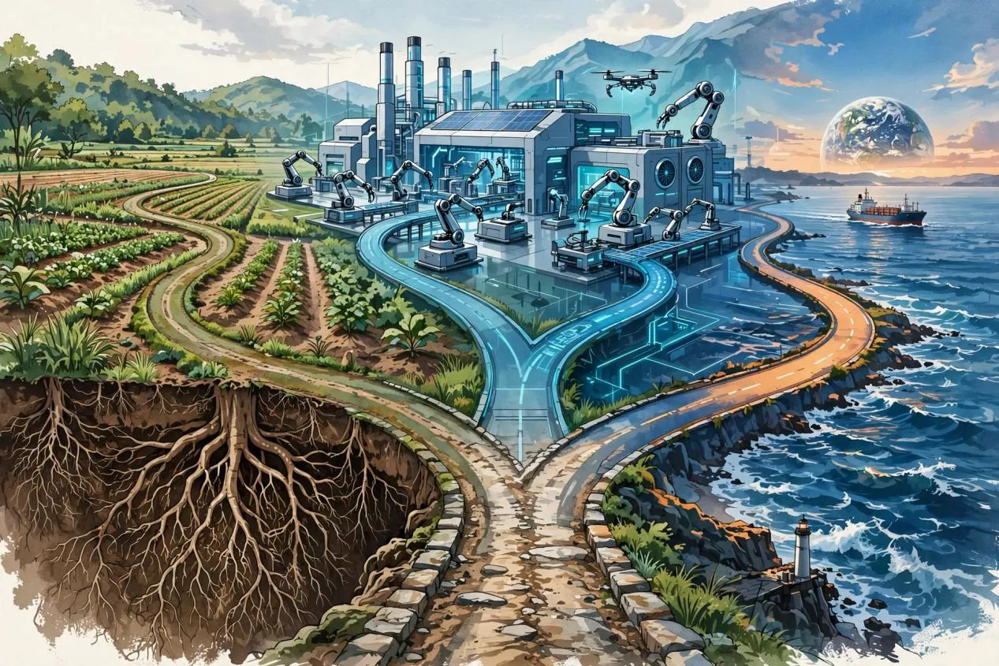

今年开年，B端产品经理的日子不好过：客户预算一砍再砍，续费谈一次比一次难；另一边，AI 以“百模大战”后的应用姿态杀进来，见单就抢。产品定位这个老话题，在今年有了新问法——当入侵者真的来了，你的定位还站得住吗？
所谓入侵者，就是那些带着钱、带着技术，“蛮不讲理”地杀进你产业链的玩家。现在，这个概念有了具体的名字：AI。
一、为什么现在，“定位”比“功能”更要命
经济好的时候，定位错了，靠市场增量还能活；现在增量没了，定位错了就是慢性死亡。
很多 B 端团队今年的真实写照是：客户说“我要一个 AI 功能”，团队吭哧吭哧三个月做出来，客户说“哦，挺好”，然后就没有然后了——不续费、不增购。这就是典型的“项目定位”：没有经过机会判断，直接凭经验开干。 区别在于，以前这么干只是“扩展性受限”，现在这么干是“直接没有第二年”。
产品经理的第一职责是评估机会，第二才是定义要开发的产品。这句话今年要加粗三遍：因为机会本身在快速消失——AI 正在把很多“机会”变成“遗迹”。
二、入侵者从理论变成了现实
竞争对手分两种：看得见的（领先者、追随者、淘汰者）和看不见的（入侵者、替代者）。今年，这套分类法依然好用，只是主语换成了 AI。
AI 是最标准的“跨界入侵者”：资金雄厚（大厂几十亿地烧）、技术领先、打法“蛮不讲理”——它不跟你拼功能，它直接把你的整条价值链重做一遍。客服 SaaS 的护城河是话术库和坐席管理，AI 客服一来，话术库不值钱了；营销 SaaS 的护城河是模板和素材，AIGC 一来，模板不值钱了。入侵者从不攻击你的长板，它让你的长板贬值。
AI 也是最彻底的“替代者”：线上支付冲击最大的不是银行，是造假币的；AI 编程助手冲击最大的不是程序员，是外包公司；AI 法律助手冲击最大的不是律师，是合同模板生意。替代者杀人不见血，因为它替代的往往不是你的直接竞品，而是你产业链里“以为很稳”的一环。
所以今年做竞品分析，表格里必须加两行：“AI 会不会把我这一环吃掉？”和“吃掉我的会是哪个大厂、哪家 AI 原生公司？” 答不上来这两行，定位就是裸奔。
三、找定位：四个老维度，一个新变量
市场分析、产业链层级、风险、竞品、趋势——这套框架依然成立，但每个维度都要加一个 AI 变量。
市场分析，加一条：这个市场还有多少“AI 渗透前的窗口期”。 看规模、看趋势之外，要看 AI 在这个领域的渗透率曲线。渗透率还低、但技术已就绪的市场，是最后的窗口期——比如今年的 AI 教育硬件、AI 招聘；渗透率已经很高的市场（AI 客服、AI 营销），进去就是红海，得掂量自己的差异化够不够硬。
产业链风险分析，“技术革新”从“可能”变成“正在发生”。 四大风险（商业模式变革、技术革新、用户流失、政策变化）里，今年要把“技术革新”标红：它不再是远期风险，而是当期损益。K12 的教训是政策一夜之间重构产业链；今年的教训是，技术一夜之间重构产业链的速度，比政策更快。 Sora 发布那天，多少视频工具团队开了紧急会，就是例证。
但有一句话依然有效：“产业链崩溃不是灾难，而是重构；重构意味着新产业链、新机会、新蛋糕。” 今年，AI 客服重构了客服产业链，跑出了新的质检、训练、数据服务环节；AI 编程重构了软件外包，跑出了 AI 代码审计、提示词工程服务。每一次“吃掉”，都伴随一次“长出”。找定位的人，要站在“长出”的那一边。
竞品分析，核心竞争力要重估。 技术、价格、客户关系、供应商、流量、资金、政策——今年要加一个灵魂拷问：你的核心竞争力里，有多少是 AI 一夜之间能抹平的？ 技术优势？大模型 API 人人可调。价格优势？AI 把边际成本打到接近零。剩下真正难抹平的，是客户关系、行业 know-how、交付实施能力——也就是那些“脏活累活”。今年的护城河，恰恰在 AI 不愿意干的地方。
趋势分析，产业链三阶段（初创、整合、细分）正在被 AI 压缩。 以前一个阶段走五年，现在可能走一年。趋势判断的窗口期变短，意味着定位不能再是“三年规划”，而要是“一年一定位、半年一复盘”。

四、B端的三条路
综合以上分析，今年 B 端产品的定位，大致收敛成三条路：
第一条：垂类深耕，做 AI 做不好的脏活累活。 医疗、法律、财税、工业——这些领域的 know-how、合规、交付实施，是大模型短期内啃不动的硬骨头。定位逻辑：我不跟 AI 拼聪明，我拼“最后一公里”。客户要的不是一个聪明的模型，是一个能落地、敢担责的解决方案。
第二条：AI 原生重做，用 AI 重做一条旧产业链。 不是“给旧产品加 AI 功能”，而是假设 AI 是水电，从零设计流程。AI 客服不是“客服系统+语音识别”，而是“先有 AI 坐席，再配人工兜底”；AI 营销不是“素材库+生成”，而是“输入目标，输出投放”。这条路最性感，也最难——要同时懂旧产业链和新技术。
第三条：出海，出去找增量。 国内 B 端预算收紧、AI 内卷，但东南亚、中东、拉美的数字化还在早期。把国内验证过的产品能力平移出去，用代差换市场。这条路拼的是本地化和渠道，不是技术。
三条路没有高下，只有匹配：看你的资源禀赋，看你的团队基因，看你能承受的风险。 选错路比不选更惨——拿着深耕的团队去做 AI 原生重做，等于让步兵去开飞机。
五、痛点四问，今年加一问
找机会点的经典四问依然好用：行业整体流程是什么？关键节点和场景在哪？有没有优化空间？上下游愿不愿为优化付费？今年加第五问：
这条流程会不会被 AI 吃掉？如果会，你是吃人的那个，还是被吃的那块？
这个问题把“定位”和“生存”焊在了一起。答“我是吃人的那个”，那就 All in AI 原生重做；答“我这块 AI 吃不动”，那就深耕垂类、把脏活做到极致；答“不知道”，那先别谈定位，先去一线看三个月。
结尾
站在风口，猪也能飞起来。但飞起来的猪一定是有翅膀的猪，归根结底还是产品本身是关键。
今年可以这么续：风口变成了龙卷风，翅膀变成了“离客户真实工作流的距离”。 AI 抹平了技术代差，抹不平的是你对客户业务的理解、你在产业链里扎的根、你替客户扛过的那些实施交付的夜。
定位，从来不是分析出来的，是在正确的战场上，用正确的姿势，替客户解决真问题——今年，只是把“正确”二字的标准，提高到了历史最高。